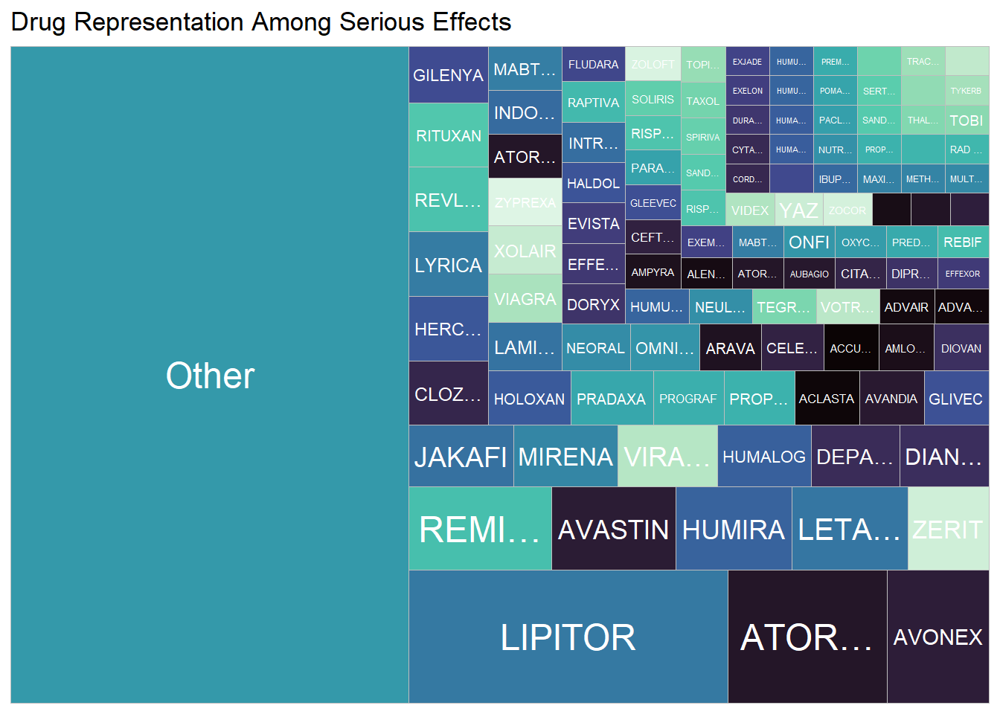
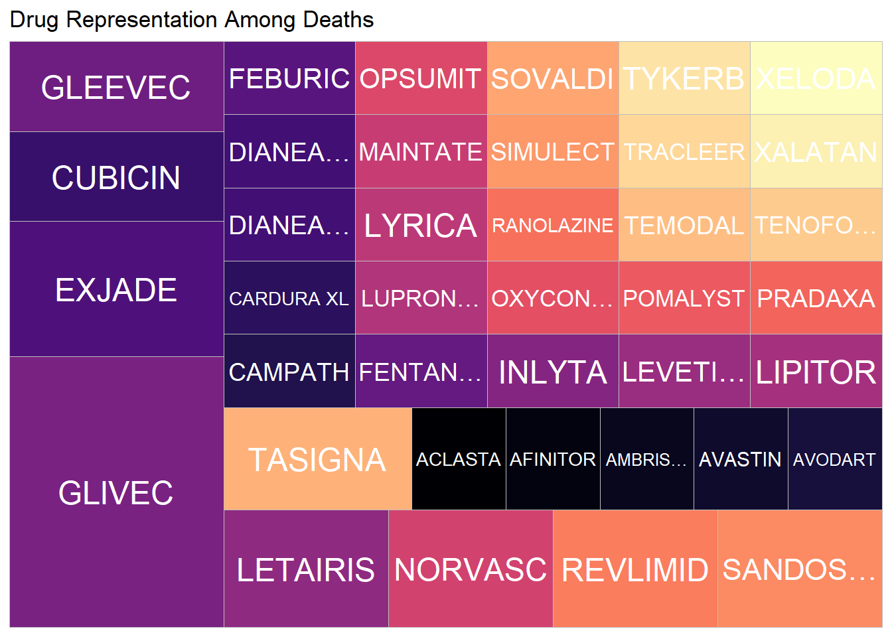
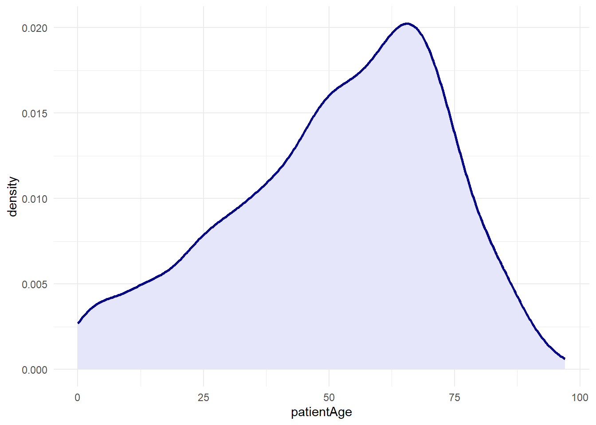

Code
key <- readLines("api_token") # get keyThe data for this mini project was taken from the openFDA API. This API serves public data from the Food and Drug Administration about drugs, devices, and foods. It only has publicly available data, so there are no sensitive personal details. We hope to use this data to show a correlation between demographic information and certain adverse effects. We also want to see if some drugs are more likely to cause serious side effects compared to other drugs, and what reactions are most common.
Thus, we decided to scrape reports about adverse drug effects on patients, and filter to only include instances where the patient had severe side effects (Death, life threatening condition, hospitalization, etc). Each report has a unique report ID, details about the patients age and sex, what drug they used, how serious the side effects were, and what their reaction to the drug was. We can group the data by age group, sex, medication name, and create plots to show the size of each group and see if there is a causal relationship between 2 or more of the variables.
This function uses the httr2 library to make a single query to the FDA’s API. Then, a simple for loop populates a dataset to return.
get_fda_data <- function(startYear, endYear, numObservations) {
# make the request
endpoint <- "https://api.fda.gov/drug/event.json"
req <- request(str_c(
endpoint,
"?api_key=", key,
"&search=serious:\"1\"+AND+receivedate:[",
startYear,
"0101+TO+",
endYear,
"1231]&limit=",
numObservations
))
resp <- req_perform(req)
# make it json
resp <- resp |>
resp_body_json()
reportId = double()
patientAge = double()
patientSex = double()
reaction = character()
drugName = character()
drugIndication = character()
# fill in our vectors
for(i in 1:numObservations) {
reportId[i-1] <- resp$results[[i]]$safetyreportid
if(is.null(resp$results[[i]]$patient$patientonsetage)) {
patientAge[i-1] <- NA
} else {
patientAge[i-1] <- resp$results[[i]]$patient$patientonsetage
}
if(is.null(resp$results[[i]]$patient$patientsex)) {
patientSex[i-1] <- NA
} else {
patientSex[i-1] <- resp$results[[i]]$patient$patientsex
}
if(length(resp$results[[i]]$patient$reaction) == 2) {
reaction[i-1] <- str_c(
resp$results[[i]]$patient$reaction[[1]]$reactionmeddrapt,
", ",
resp$results[[i]]$patient$reaction[[2]]$reactionmeddrapt
)
} else if(length(resp$results[[i]]$patient$reaction) == 1) {
reaction[i-1] <- resp$results[[i]]$patient$reaction[[1]]$reactionmeddrapt
} else {
reaction[i-1] <- ""
}
drugName[i-1] <- resp$results[[i]]$patient$drug[[1]]$medicinalproduct
}
# construct the tibble
drug_tbl <- tibble(
reportId = parse_number(reportId),
patientAge = parse_number(patientAge),
patientSex = parse_number(patientSex),
drugName = drugName,
reaction = reaction
)
drug_tbl
}Since the API limits the number of rows that can be returned, we make two requests to get all the drug effect data from 2000 to 2019.
Here’s what the result looks like:
# A tibble: 1,998 × 5
reportId patientAge patientSex drugName reaction
<dbl> <dbl> <dbl> <chr> <chr>
1 10003301 NA 2 IBUPROFEN "Dyspepsia, Renal impairment"
2 10003311 76 2 LETAIRIS "Oedema peripheral, Fluid rete…
3 10003312 43 2 ILARIS "Pneumonia, Drug ineffective"
4 10003315 NA 1 RANOLAZINE "Death"
5 10003317 46 1 BENLYSTA ""
6 10003318 59 2 BELIMUMAB "Tuberculosis of central nervo…
7 10003319 46 2 BENLYSTA ""
8 10003321 71 1 ACETAMINOPHEN. "Adenoviral haemorrhagic cysti…
9 10003325 68 2 LETAIRIS "Swelling"
10 10003326 29 2 CEFTRIAXONE ""
11 10003327 53 1 PREDNISONE ""
12 10003328 55 2 PACLITAXEL ""
# ℹ 1,986 more rowsNow that we have our data, we should do something with it! These tree maps will illustrate what the overall distribution among specific drugs looks like, as well as reveal any outliers.
library(treemapify)
drugs |>
mutate(drugName = as.character(fct_lump_n(drugName, 100))) |>
group_by(drugName) |>
summarize(n = n()) |>
mutate(drugName = ifelse(
nchar(drugName)>7,
str_c(substr(drugName, start=1, stop=4), "…"),
drugName
)) |>
ggplot(aes(area = n, fill = drugName, label = drugName)) +
geom_treemap() +
geom_treemap_text(colour = "white", place = "centre") +
labs(title = "Drug Representation Among Serious Effects") +
theme_minimal() +
scale_fill_viridis_d(option = "G") +
theme(legend.position = "none")
drugs |>
filter(reaction == "Death") |>
mutate(drugName = as.character(fct_lump_min(drugName, 1))) |>
group_by(drugName) |>
summarize(n = n()) |>
mutate(drugName = ifelse(
nchar(drugName)>10,
str_c(substr(drugName, start=1, stop=6), "…"),
drugName
)) |>
ggplot(aes(area = n, fill = drugName, label = drugName)) +
geom_treemap() +
geom_treemap_text(colour = "white", place = "centre") +
labs(title = "Drug Representation Among Deaths") +
theme_minimal() +
scale_fill_viridis_d(option = "A") +
theme(legend.position = "none")
The plots give some indication of which drugs caused the most serious side effects. In both plots, we can see that the distribution is relatively even among the drugs, as it seems that most of them only occur one or two times. Lipitor stands out as having the most incidents, and we can see that it also has one death associated with it in the second plot. This plot also reveals that Glivec, while it had appeared benign before, actually caused the highest number of deaths in the data.

Unsurprisingly, the most common age for incidents in the data set is in the sixties. However, this plot also highlights that some of the drugs affected children.